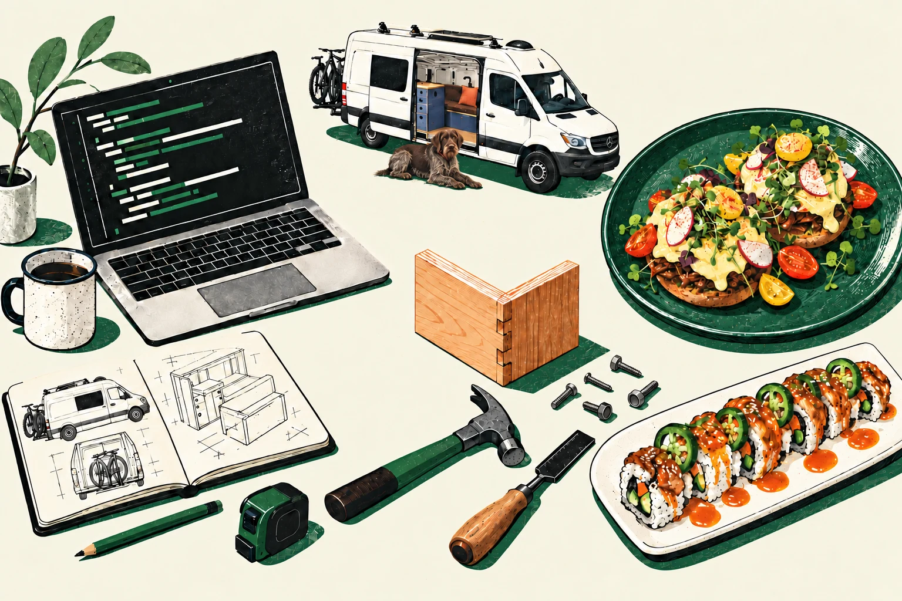

I’m abuilder.
I put things together.
At work. In the garage.
And usually in the kitchen.
Software, sawdust,
and something for dinner.
Different parts.
Same instinct.
Take an idea apart.
Figure out what matters.
Make something that works.

It’s all
connected.
The tools change.
The builder stays.
Make the
complex
useful.
My work at Seeq brings me close to the people using industrial data. It’s technical work with a human side: understanding a problem, putting the pieces together, and helping someone move forward.
Applied industrial analytics.
Customer-facing technical work.
A software project I’m building.
the problem
the pieces
useful
IDEAS, AT FULL SCALE.
FROM A SCREEN TO SOMETHING YOU CAN TOUCH.Built
with my
own hands.
I built my van. I have a full garage workshop. Working with physical things is another way I make sense of an idea: putting parts together and seeing what they become.
A hands-on project that lives beyond the workbench.
Room to try things. And the tools to put them together.
A different kind
of assembly.
Cooking belongs here, too. Ingredients become a meal. Separate pieces become something you can share. Another reason to make things with my hands.
Hi, I’m
Anthony.
Based in Portland.
Curious across disciplines.
Happiest putting things together.
My path connects research at Lonza, applied industrial analytics at Seeq, and the things I build in my own time.
Code, a van, a meal. Different materials, same thread.
BACK TO THE WORKBENCH